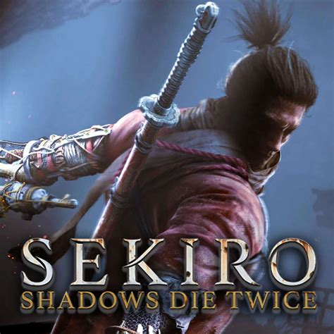
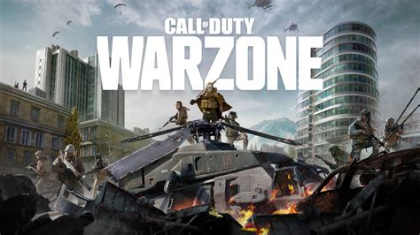

Los juegos de acción han sido durante mucho tiempo una de las categorías más emocionantes y apasionantes en el vasto universo de los videojuegos. Desde tiroteos intensos hasta hazañas acrobáticas y combates cuerpo a cuerpo, los juegos de acción ofrecen una experiencia de juego llena de adrenalina que captura la atención de jugadores de todas las edades.
La Diversidad de los Juegos de Acción
Una de las bellezas de los juegos de acción es su diversidad. Desde shooters en primera persona que te sumergen en intensas batallas hasta juegos de plataformas que desafían tu destreza y rapidez, hay algo para cada tipo de jugador...
Gráficos Impresionantes y Ambientes Realistas
Los juegos de acción contemporáneos se destacan por sus gráficos impresionantes y ambientes realistas. La tecnología moderna permite a los desarrolladores crear mundos virtuales detallados que sumergen a los jugadores en experiencias visuales impresionantes...
Multijugador: Conectando a Jugadores de Todo el Mundo
La componente multijugador ha llevado la experiencia de juego de acción a un nuevo nivel. Los modos en línea permiten a los jugadores colaborar en misiones, competir en combates intensos o simplemente disfrutar de la compañía virtual de amigos de todo el mundo...
La Evolución de las Mecánicas de Juego
A lo largo de los años, las mecánicas de juego en los juegos de acción han evolucionado de manera significativa. Desde la introducción de movimientos parkour hasta la personalización detallada de personajes...
Top 5 Juegos de Acción que Debes Probar
-

DOOM Eternal
*DOOM Eternal* es un frenético shooter en primera persona que te sumerge en un mundo apocalíptico lleno de demonios y caos. Con una jugabilidad rápida y brutal, este juego ofrece una experiencia intensa y satisfactoria. La campaña llena de acción y los combates frenéticos son acompañados por una banda sonora épica que te sumerge completamente en la acción.
-

Assassin's Creed Valhalla
Viaja a la época de los vikingos con *Assassin's Creed Valhalla*. Este juego de acción y aventuras te permite explorar un vasto mundo abierto, participar en emocionantes batallas y vivir la vida de un guerrero vikingo...
-

Sekiro: Shadows Die Twice
Desarrollado por FromSoftware, *Sekiro: Shadows Die Twice* es un juego de acción desafiante que te sumerge en el Japón feudal...
-
Marvel's Spider-Man: Miles Morales
Embárcate en una emocionante aventura como el héroe arácnido en *Marvel's Spider-Man: Miles Morales*. Este juego de acción de mundo abierto te permite balancearte por Nueva York, enfrentarte a villanos icónicos y descubrir los poderes únicos de Miles Morales...
-

Call of Duty: Warzone
*Call of Duty: Warzone* lleva la acción a un nivel completamente nuevo con su modo de batalla real. En este juego multijugador en línea, te enfrentarás a otros jugadores en un combate a vida o muerte en un enorme mapa...